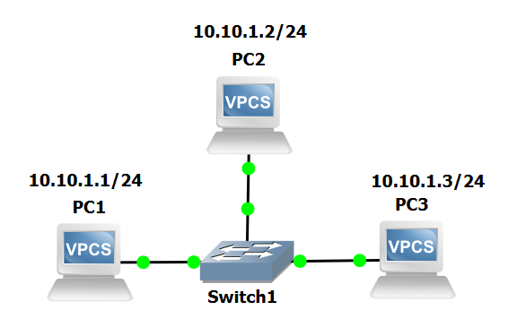
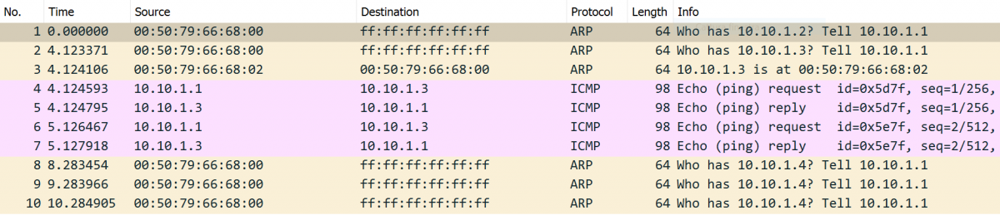

Lab #8
LAN: switch
The purpose of this lab is to show how IP and ARP work in a LAN context based on a switch device.
Compare this lab with Lab #1 to understand the difference between hubs and switches.
Experiment steps
- Recreate the following topology in GNS3.

- Start all devices.
- Assign IP addresses to PC1, PC2 and PC3 as in the picture above.
- Start packet capture on link connecting Switch1 to PC3.
Traffic generation
Open PC1 terminal and execute the following commands:
ping 10.10.1.2 -c 2
ping 10.10.1.3 -c 2
ping 10.10.1.4 -c 2
Expected output in PC1 terminal
The ping command from PC1 towards PC2 (10.10.1.2) and PC3 (10.10.1.3) should succeed.
The ping from PC1 towards the unassigned IP address 10.10.1.4 should produce an error message.
From PC1's perspective, the results of this experiment are exactly the same of those obtained in Lab #1, when there was a hub at the place of the switch.
Packet capture analysis

Notice that now, Wireshark running on the link connecting PC3 to the switch can only see two kind of packets:
- broadcast frames, such as ARP requests [frames #1, #2, #8, #9 and #10];
- unicast frames transmitted from or to PC3's MAC, i.e. frames with a source or destination MAC 00:50:79:66:68:02 [frames #3, #4, #5, #6 and #7].
All other frames that were captured by Wireshark in LAN Lab #1 are actually transmitted and exchanged by PC1 and PC2 but they are not seen by Wireshark as it listens on the port connecting PC3 to the switch.
This is exactly consistent with the behaviour of an Ethernet switch.
The apparently "missing" packets include:
- ARP reply transmitted by PC2 back to PC1
- ICMP echo requests transmitted by PC1 to PC2
- ICMP echo replies transmitted by PC2 to PC1
Return to list of labs
Copyright (c) 2024 - Roberto Canonico
Last updated: October 3, 2024 by Roberto Canonico